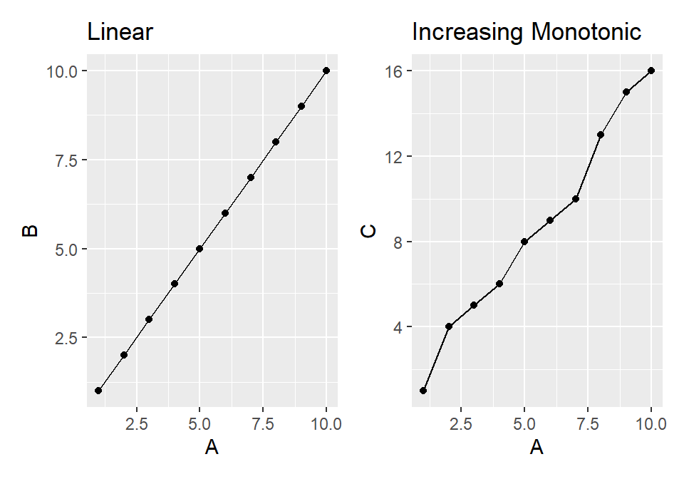
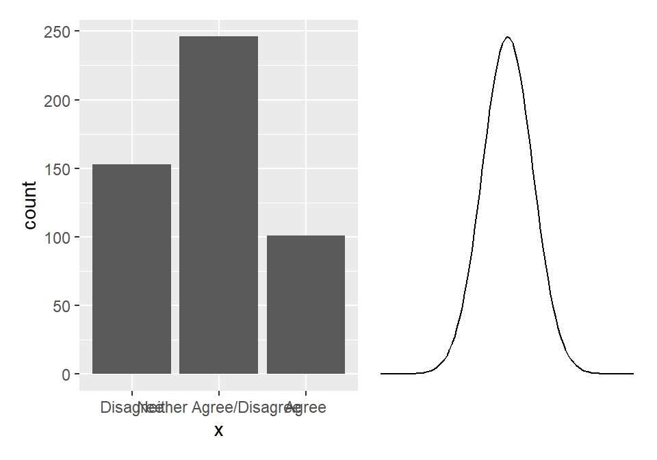

| X | Y | Correlation Type |
|---|---|---|
| Continuous | Continuous | Pearson |
| Continuous | Categorical | Polyserial |
| Continuous | Binary | Biserial |
| Categorical | Categorical | Polychoric |
| Binary | Binary | Tetrachoric |
| Rank | Rank | Spearman |
| Nominal | Nominal | Chi-square |

\[ \rho = 1 - \frac{6\Sigma{d^2_i}}{n(n^2-1)} \]
rank_calc <- rank %>%
mutate(
RT_rank = rank(RT),
Caff_rank = rank(Caff),
di = RT_rank - Caff_rank,
di2 = di^2
)
rank_calc
# A tibble: 6 x 7
ID RT Caff RT_rank Caff_rank di di2
<chr> <dbl> <dbl> <dbl> <dbl> <dbl> <dbl>
1 ID1 0.264 210 1 4 -3 9
2 ID2 0.311 280 4 5 -1 1
3 ID3 0.265 150 2 2 0 0
4 ID4 0.291 90 3 1 2 4
5 ID5 0.35 200 5 3 2 4
6 ID6 0.5 450 6 6 0 0rank_calc
# A tibble: 6 x 7
ID RT Caff RT_rank Caff_rank di di2
<chr> <dbl> <dbl> <dbl> <dbl> <dbl> <dbl>
1 ID1 0.264 210 1 4 -3 9
2 ID2 0.311 280 4 5 -1 1
3 ID3 0.265 150 2 2 0 0
4 ID4 0.291 90 3 1 2 4
5 ID5 0.35 200 5 3 2 4
6 ID6 0.5 450 6 6 0 0\[ \rho = 1 - \frac{6\Sigma{d^2_i}}{n(n^2-1)} = 1 - \frac{6*18}{6(6^2-1)} = 1 - \frac{108}{210} = 1 - 0.514 = 0.486 \]

hetcorpers_cors$correlations
A1 A2 A3 A4 A5
A1 1.0000000 -0.3679011 -0.2924884 -0.1639639 -0.2072343
A2 -0.3679011 1.0000000 0.4867503 0.3352432 0.3877875
A3 -0.2924884 0.4867503 1.0000000 0.3621720 0.5051762
A4 -0.1639639 0.3352432 0.3621720 1.0000000 0.3067003
A5 -0.2072343 0.3877875 0.5051762 0.3067003 1.0000000pers_cors$type
[,1] [,2] [,3] [,4] [,5]
[1,] "" "Polyserial" "Polyserial" "Polyserial" "Polyserial"
[2,] "Polyserial" "" "Pearson" "Pearson" "Pearson"
[3,] "Polyserial" "Pearson" "" "Pearson" "Pearson"
[4,] "Polyserial" "Pearson" "Pearson" "" "Pearson"
[5,] "Polyserial" "Pearson" "Pearson" "Pearson" ""